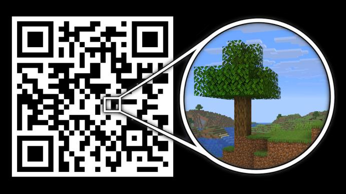
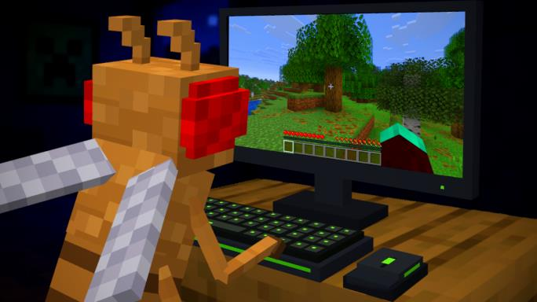
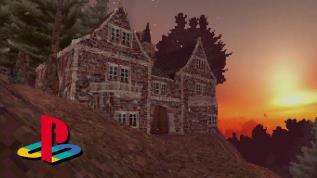
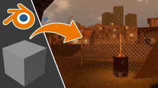
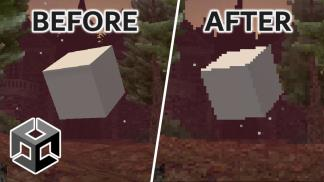
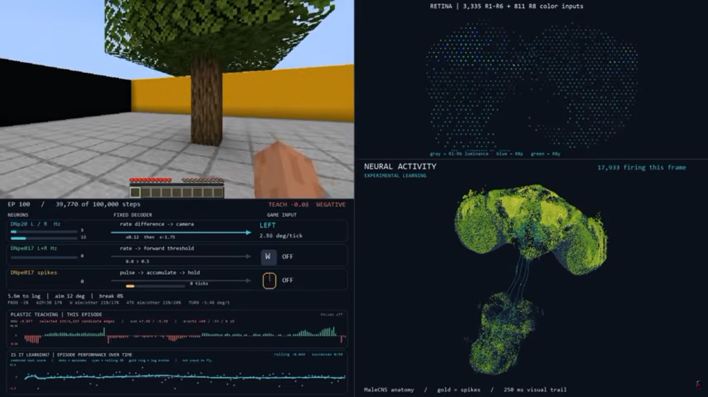

This QR Code Contains Minecraft
20K views in 3 weeks
Programming • Gaming • Weird technical experiments
Hacktic explores unusual programming and technology challenges — from fitting Minecraft inside a QR code to using a real fruit-fly brain to control Minecraft. The channel reaches a technically minded audience interested in programming, gaming, creative technology and ambitious experiments.
Recent momentum

20K views in 3 weeks

14K views in 48 hours
Proven track record
Multiple videos have continued to attract viewers long after publication, giving Hacktic both current momentum and a proven history of reaching technical audiences.

498K+ views
148K+ views
116K+ viewsSponsorships
I work with brands that make sense for the kinds of programming, gaming and technology projects I already make. Most sponsorships are short integrations within regular Hacktic videos.
Primary format
A short sponsor segment within a regular Hacktic video, written to fit naturally with the topic and audience.

• Dedicated videos can work when the product itself makes for a strong Hacktic-style idea.
• Paid usage rights or additional licensing can also be discussed if needed.
Audience & creator
Audience snapshot
About Matthew
Let’s work together
For sponsorships, integrations and other collaborations, get in touch.